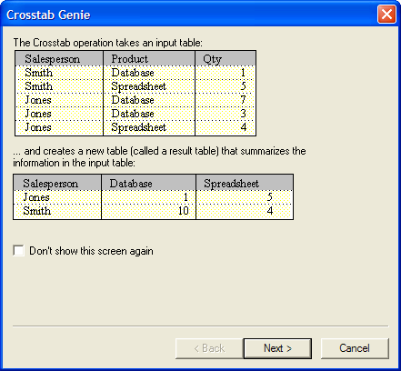
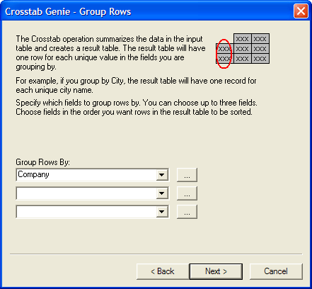
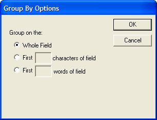
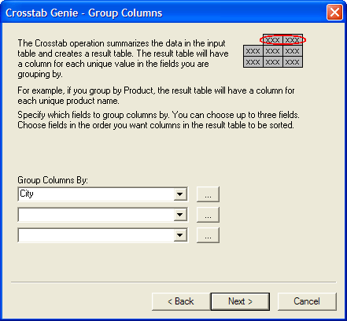
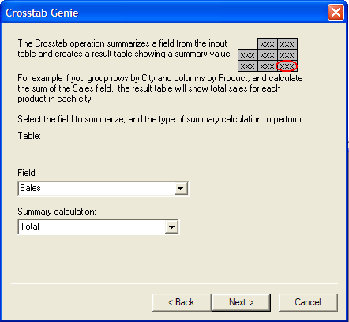
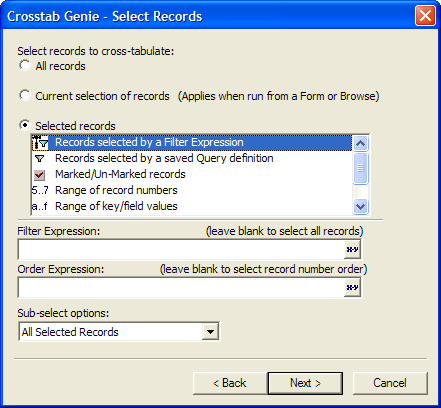
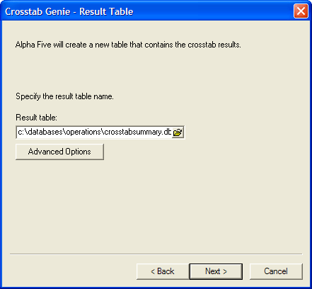
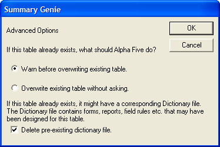
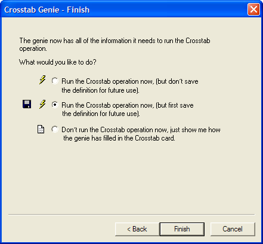

Crosstab Operations
A Crosstab operation takes data from a single table or set and uses it to create a new table, in which certain field values from the transaction table are used as field names in the result table. For example, you have City and Sales data from several companies, as shown below:
Transaction Table
|
Company |
City |
Sales |
| ABC Inc. | Boston | 50 |
| ABC Inc. | Boston | 50 |
| ABC Inc. | Boston | 50 |
| ABC Inc. | Paris | 25 |
| PDQ Inc. | London | 75 |
| PDQ Inc. | Paris | 60 |
| PDQ Inc. | London | 75 |
| PDQ Inc. | Boston | 25 |
By using a Crosstab operation, you can create a table that shows the total Sales by City for each Company. The field values in the City field of the master table determine the field names in the result table:
Result Table
|
Company |
Boston |
London |
Paris |
| ABC Inc. | 150 | 0 | 25 |
| PDQ Inc. | 25 | 150 | 60 |
Performing a Crosstab Operation
To create a new Crosstab operation:
On the Operations tab of the Control Panel, click the New button. The Create New Operation dialog box appears.
Select "Crosstab" from the Select Operation list.
Select the table to use from the Table/Set list.
Click the Create button.
Enter the name of the new table in the Result Table Name field.

Crosstab Builder
To optionally filter or order the records that the crosstab operation processes, open the Select Records dialog box by clicking the Select Records button on the toolbar.
Make a selection from the list.
Optionally, add filtering (a logical expression ) and ordering (a character expression ) criteria.
Click OK to proceed.

Select Records Dialog Box
The various settings let you determine:
Which field is used to create the field names
Which field identifies the record
Which field is used to create the Crosstab values
The records to include in the operation
Choosing the Field to Summarize in the Cross-tabulation
The data in the result table consists of a field or expression that is summarized for each column and row combination. To specify these criteria, enter the field or expression to summarize in the Field/Expression column. Then select the type of summarization operation you want to perform in the Summarization column. You are given the choice of many different types of summarizations, including TOTAL() and AVERAGE().
|
Field/Expression |
Summarization |
| SALES | Total |
In the Field/Expression column, click the list button
 to select a field from the
source table. In this example, we are selecting "Sales".
to select a field from the
source table. In this example, we are selecting "Sales".In the Summarization column to the right of the field, click the list button
to select a summarization function. In this example, we are
selecting "Total".Repeat steps 10 and 11 for other fields you wish to summarize.
If you want to summarize an expression, such as Quantity*Cost,
instead of a single field, you can either type the expression directly
into the Field/Expression column, or choose
"
Determining the Rows and Columns
In the previous example, the City field is used to determine the column grouping, while the Company field is used to determine the row grouping. To specify these criteria, the Crosstab Settings is filled in as follows:
|
Field/Expression |
Summarization |
| Sales | Total |
| City | Group by Column |
| Company | Group by Row |
In the Field/Expression column, click the list button
to select the field that
will provide the row heading. In this example, we are selecting "Company".In the Summarization column to the right of the field, click the list button
to select the "Group by Row" function.In the Field/Expression column, click the list button
to select the field that
will provide the column heading. In this example, we are selecting "City".In the Summarization column to the right of the field, click the list button
to select the "Group by Column" function.Repeat steps 15 and 16 if there are other fields that you wish to group by column.
 Note : When setting
the "Group by Column" and "Group by Row" criteria,
you can use an expression instead of a single field. To specify an expression,
either type the expression directly into the Field/Expression
column, or choose "
Note : When setting
the "Group by Column" and "Group by Row" criteria,
you can use an expression instead of a single field. To specify an expression,
either type the expression directly into the Field/Expression
column, or choose "
Conditions
The default condition is to include all records from the transaction (source) table in the resulting master (crosstab) table. The Condition column and the OR columns to the right of a field optionally specify filter criteria that allow a record to be included in the crosstab only if they evaluate to TRUE. If you have an entry in one or more of the OR columns, then any these expression that evaluates to TRUE is sufficient to include the record in the crosstab.
Optionally, enter expressions in the Condition or the OR columns that select records to include crosstab.
For additional options, Click the Properties button on the toolbar.
Optionally, check Overwrite existing table without asking suppresses the warning message that appears when you run the operation. Suppressing the warning message might be desirable if you wish to avoid confusing someone running your application.
The dictionary file contains, among other things, the forms used to display the crosstab data. Clear Delete pre-existing dictionary file if you wish keep any pre-existing forms.
Check Omit matching records if you wish to invert the logic of the Condition column, so that any record that matches the Condition column or any of the OR columns is excluded from the crosstab.

Properties Dialog Box
Click the Run button on the toolbar to run the operation.
Click OK when the message box tells you how many records will be processed.
Click Next > to continue.

In the Group Rows By field, select the field that will provide the row headings in the resulting crosstab table.
Click Next > to continue.

Optionally, click the ... button to display the Group By Options dialog. This dialog allows you to:
group on the first N characters of the field's data
group on the first N words of the field's data
Click OK to continue or Cancel to discard your inputs.
Click Next > to continue.

In the Group Columns By field, select the field that will provide the column headings in the resulting crosstab table.
Click Next > to continue.

In the Field field, select the field that you will summarize in the resulting crosstab table.
Click Next > to continue.

On the Select Records page, choose either:
"All records" - analyze all records from the Transaction table.
"Current selection of records"
"Selected records"
If you selected "Selected records", then make a selection from the list box.
Enter the filter and order criteria required by your choice.
Click Next > to continue.

Enter the name of the crosstab (master) table in the Result table field.
Click Next > to continue.

Optionally, click Advanced Options to display the Summary Genie dialog box.
Indicate whether you want to warn the operator before overwriting any existing table.
Dictionary files contain, among other things, forms that you might use to view the crosstab data. Indicate whether you want to delete any pre-existing dictionary file.
Click OK to continue or Cancel to discard your inputs.
Click Next > to continue.

Indicate whether you want to run the operation now, save the operation and then run it, or view the settings of the Crosstab Builder.
Click Finish.

If you selected Run the Crosstab operation now, (but first save the definition for future use), the Save crosstab settings as... dialog box will appear.
Enter the name of the operation into the Name field and click OK.
If you selected Don't run the Crosstab operation now, just show me how the genie has filled in the Crosstab Builder, the Crosstab Builder will appear.
Optionally, click Save to display the Save crosstab settings as... dialog box.
Enter the name of the operation into the Name field and click OK.
Optionally, click the Run button on the toolbar to run the operation.
See Also
Overview of Batch Operations, Table Operation Methods